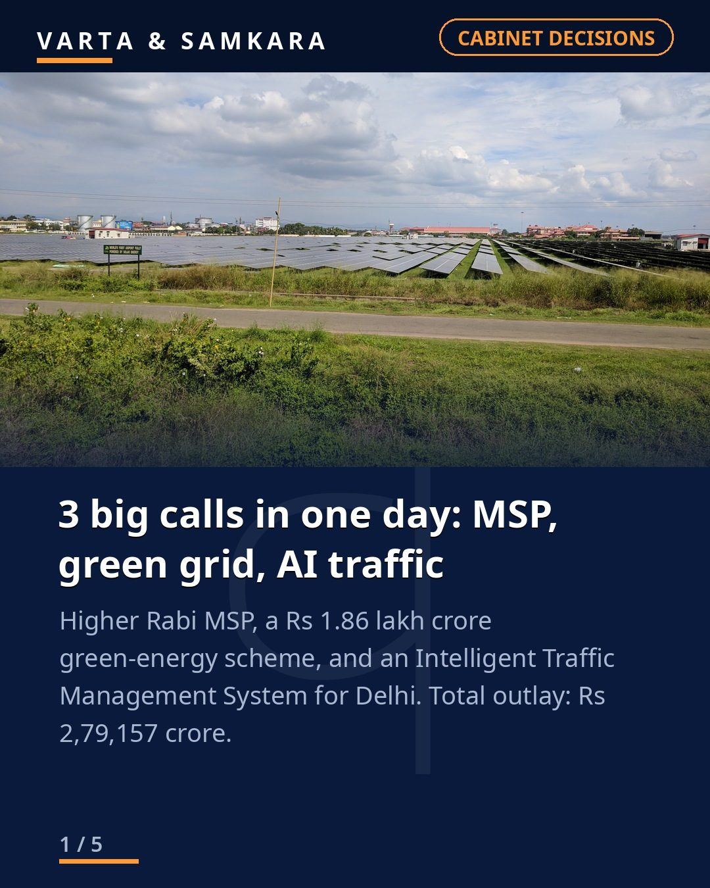
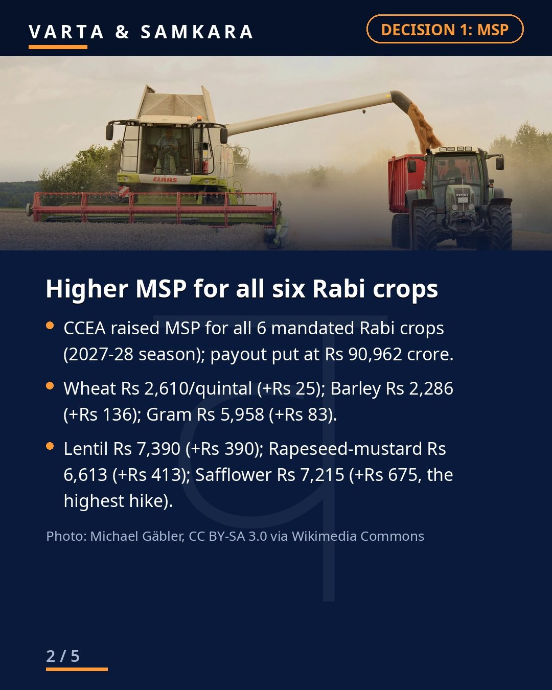
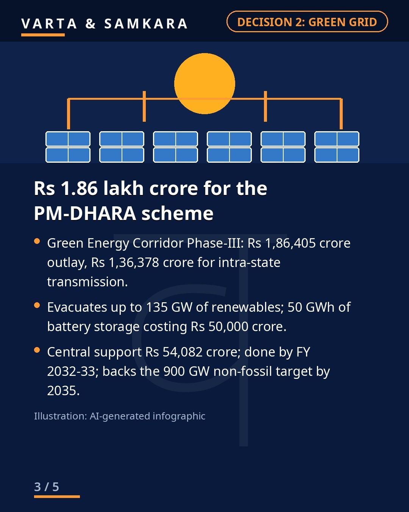
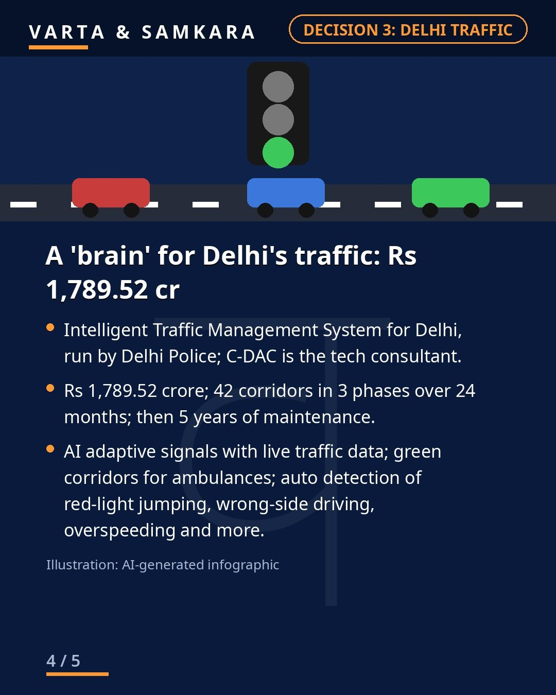
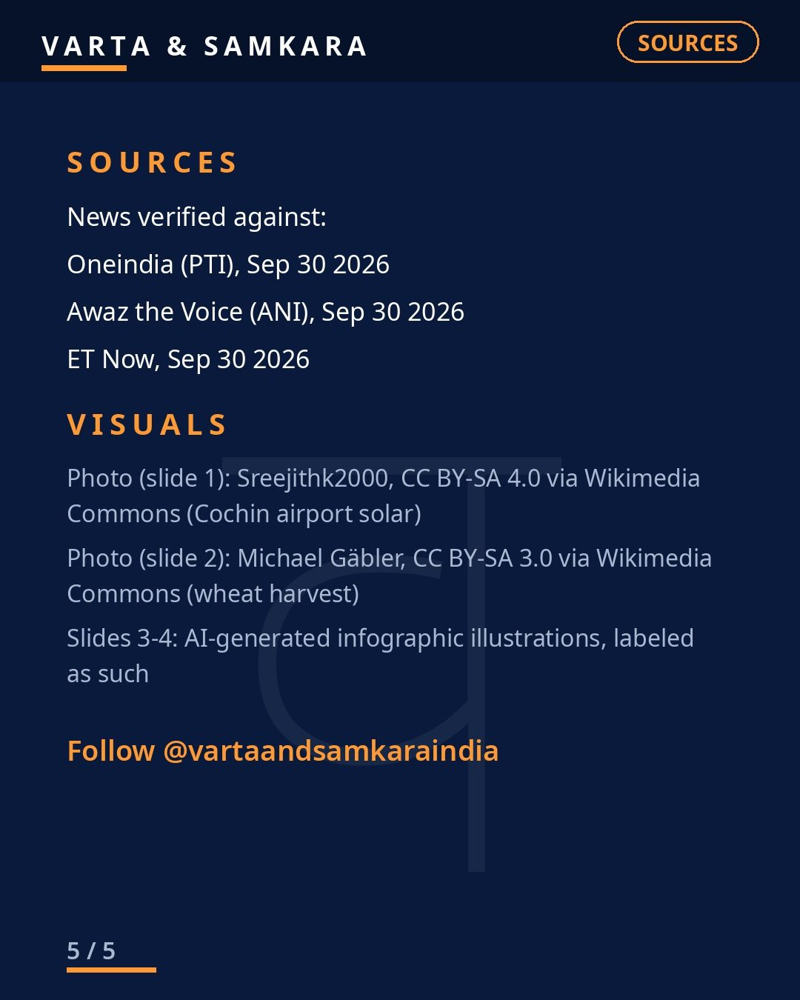

Union Cabinet's 3 big decisions: Rabi MSP hike, Rs 1.86 lakh cr green grid, AI traffic plan for Delhi

On September 30, 2026, the Union Cabinet approved three major measures: higher Minimum Support Prices for all six mandated Rabi crops for the 2027-28 marketing season, the Rs 1,86,405 crore PM-DHARA (Green Energy Corridor Phase-III) scheme, and a Rs 1,789.52 crore Intelligent Traffic Management System for Delhi. Total outlay: Rs 2,79,157 crore.
First, the farm decision. MSP goes up for all six mandated Rabi crops: safflower rises Rs 675 to Rs 7,215 per quintal, and wheat rises Rs 25 to Rs 2,610 per quintal. The hikes cover the 2027-28 marketing season and are aimed at assuring farmers remunerative prices ahead of the sowing cycle.
Green grid and Delhi traffic
Second, the Rs 1,86,405 crore PM-DHARA (Green Energy Corridor Phase-III) scheme will build transmission to evacuate up to 135 GW of renewable energy, backed by 50 GWh of battery storage, by FY 2032-33. It is one of the largest single green-energy infrastructure commitments the Cabinet has cleared.
Third, Delhi gets a Rs 1,789.52 crore Intelligent Traffic Management System covering 42 corridors in 3 phases, an attempt to use AI-driven signal and surveillance systems to ease the capital's chronic congestion.
The decisions were announced by Union Minister Ashwini Vaishnaw. Together, they touch three of the government's biggest themes: farm incomes, the clean-energy transition, and urban infrastructure.
In pictures




See the original reel / carousel with motion graphics on Instagram.
View on Instagram